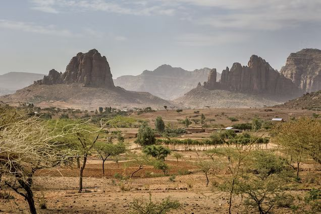
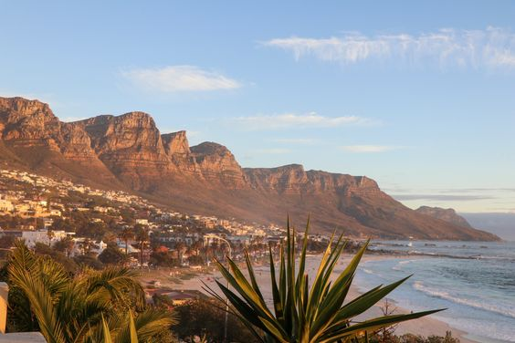

BERANGKATT
UWAWWW TRAVEL

EUTOPIHIA
Gurun Sahara merupakan padang pasir terbesar yang ada di dunia. Nama Sahara diambil dari bahasa Arab yang artinya adalah padang pasir. Gurun Sahara berada di utara Afrika serta memiliki usia dengan perkiraan 2,5 juta tahun.
👤 20.000viewers
💬 5.690 comments

AFRIKA SELATAN
Sungai Nil merupakan sungai paling panjang yang ada di dunia, yang mengalir ke utara dari timur laut Afrika. Sungai Nil ini bermuara di Laut Mediterania yang ada di bagian timur laut Afrika
👤 19.000viewers
💬 6.980 comments

PAPAKIN
Gunung Kilimanjaro merupakan gunung yang berada di sebelah timur laut Tanzania. Gunung Kilimanjaro merupakan salah satu gunung paling tinggi yang ada di dunia dengan tinggi mencapai 4.600 m jika diukur mulai dari kaki gunungnya.
👤21.000 viewers
💬 10.000comments